SFC Solutions est une SAS (Société par Actions Simplifiée), experte dans le développement et la fabrication de systèmes d’étanchéité pour le secteur automobile.
Mission : Assurer la protection des véhicules (bruit, poussière, eau).
Membre d’Amaneos, acteur mondial de l’industrie automobile.
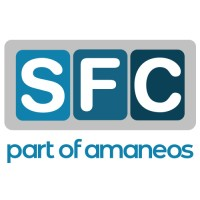
Objectif : Refonte d'une application de supervision industrielle vers Laravel et mise en place d'une authentification centralisée via LDAP.
Axes de développement :
Utilisation d'un outil de gestion de tâches pour prioriser les développements :
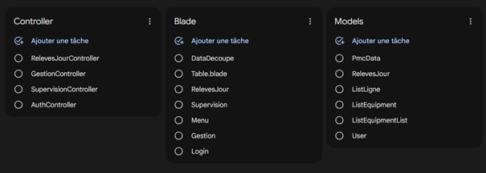
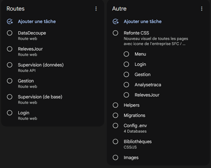
L'application interroge l'Active Directory de l'entreprise pour permettre aux employés d'utiliser leurs identifiants Windows.
Rendu de l'interface :
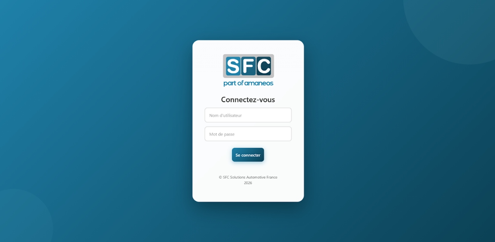
Logique du Controller :
$ldap = ldap_connect($adServer);
$bind = @ldap_bind($ldap, $ldaprdn, $password);
if ($bind) {
$user = User::updateOrCreate(
['pseudonyme' => $info[$i]["samaccountname"][0]],
['nom' => $info[$i]["sn"][0], 'prenom' => $info[$i]["givenname"][0]]
);
Auth::login($user);
return redirect()->route('accueil');
}
Configuration des Routes (Middlewares) :
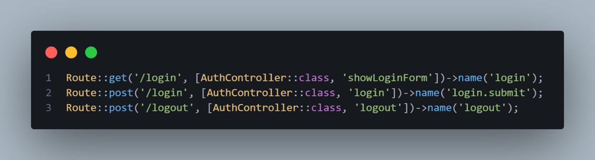
Traitement des données (Controller) :
public function getLines()
{
$lines = DB::table('list_lines')
->orderBy('id_ligne')
->select('id_ligne', 'name')
->get();
return response()->json($lines);
}
Script d'actualisation dynamique :
//fonction de rafraîchissement
setInterval(refreshElements, 10000);
refreshElements = function() {
$.getJSON("{{ url('api/equipment') }}?id=" + ids)
.done(function(items) {
//mise a jour de l'interface...
Configuration des Routes (Middlewares) :
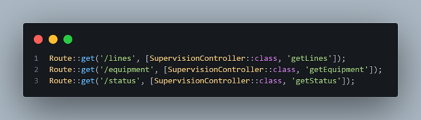
Cette partie gère l'affichage dynamique des lignes de production. Le défi était de traiter les données provenant du serveur CLSEALYNX en SQL Server et de les renvoyer proprement vers l'interface Laravel.
Rendu de l'interface :
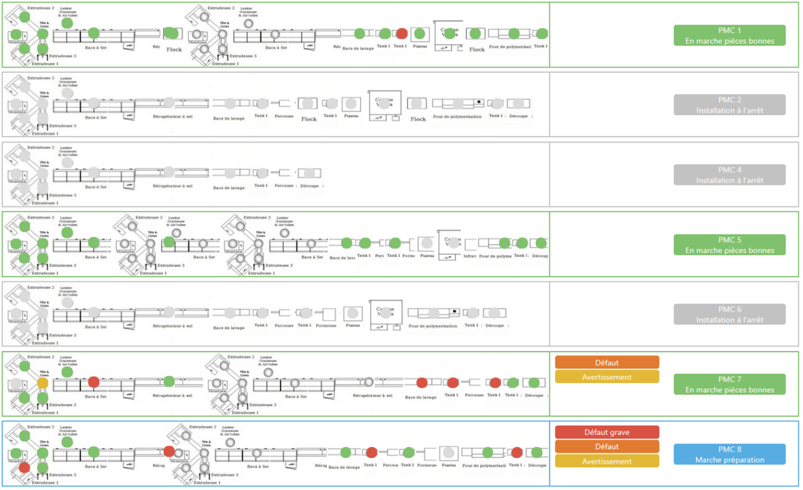
Logique de filtrage (RelevesJourController) :
elseif ($request->has('ref') && $request->has('ligne')) {
$ref = $request->input('ref');
$limit = $request->input('limit', 50); //Par défaut 50 résultats
$query = RelevesJour::where('id_ligne', $ligne);
$hasFilter = false;
if ($request->has('boudineuse1')) {
$query->where('b1_ref', 'LIKE', "%{$ref}%");
$hasFilter = true;
}
if ($request->has('boudineuse2')) {
if ($hasFilter) {
$query->orWhere('b2_ref', 'LIKE', "%{$ref}%");
} else {
$query->where('b2_ref', 'LIKE', "%{$ref}%");
$hasFilter = true;
}
}
if ($request->has('boudineuse3')) {
if ($hasFilter) {
$query->orWhere('b3_ref', 'LIKE', "%{$ref}%");
} else {
$query->where('b3_ref', 'LIKE', "%{$ref}%");
}
}
$query->orderByDesc('enregistrement');
Capture du code source :
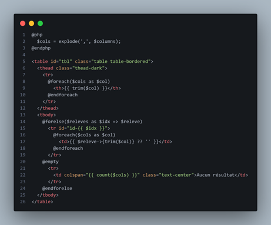
Ce module permet aux utilisateurs de consulter l'historique et d'extraire des données spécifiques. J'ai mis en place un système d'exportation CSV personnalisable.
Rendu de l'interface :
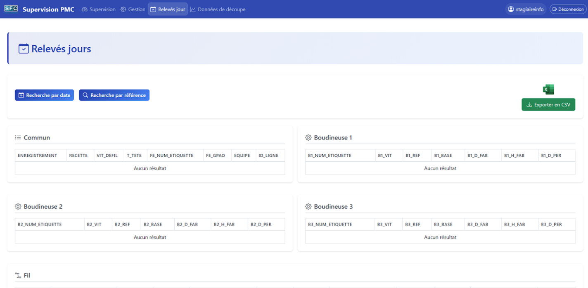
Configuration des Routes (Middlewares) :
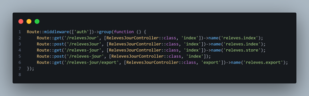
💡 Note : L'export utilise SweetAlert2 pour confirmer l'action.
Cliquez ici pour voir les 4 étapes de l'export.Cliquez sur les interfaces pour les agrandir et visualiser l'ergonomie générale du projet.
Structure du Menu Nav
Interface de Connexion (LDAP)
Dashboard de Supervision
Consultation des Relevés
Consultation des données de découpe
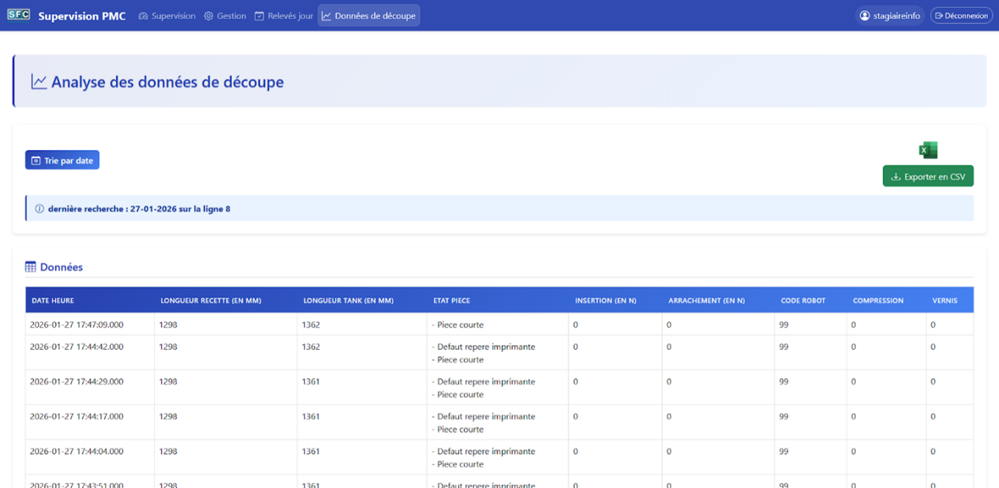
Rendue de la Gestion des lignes
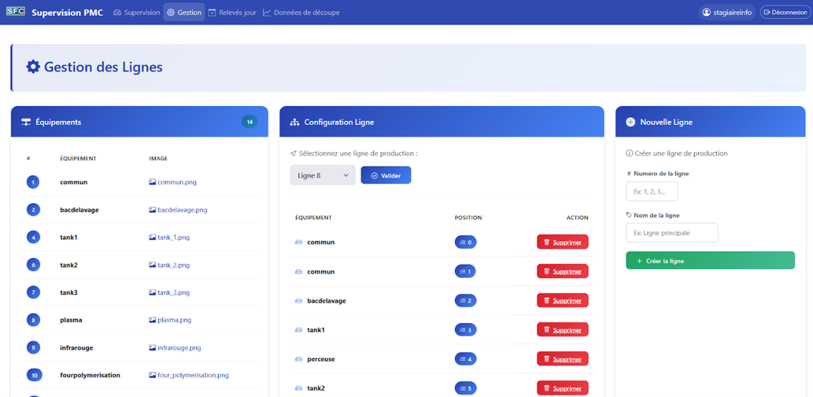
Arborescence du Projet
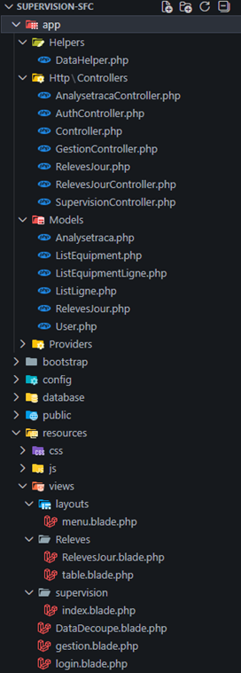
Organisation des Fichiers
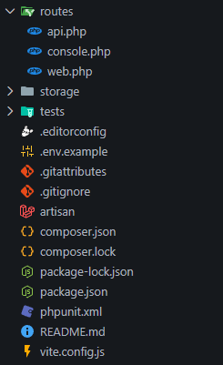